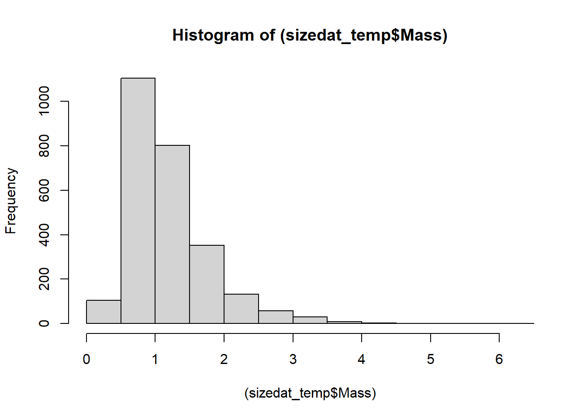
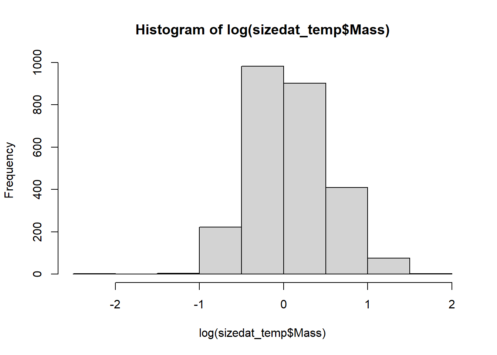

Supplementary materials: Single stressor data analysis for performance of diploids and triploids
This document presents the analysis of growth, oxygen consumption, and survival data collected from laboratory experiments that held diploid, chemically induced triploid, and mated triploid C. gigas under 5 levels of temperature, pH, and, disolved oxygen. These 3 experiments were performed sequentially.
Packages
Several packages are used to analyse this data. To see these click “show code”
High mortality occurred in the pH experiment, thus we did not assess differences in individual growth rates due to the potential for size selective mortality to impact results. We only examine if a difference in mean mass and shell height of each pliody group in each between the start and the end of each experiment.
Table 1: Summary of size data from the temperature experiments. 3M = mated triploid, 2M = diploid, 3C = chemically induced triploid.
Ploidy
Treatment
Time
Mean mass (g)
SEM mass
Mean shell height (mm)
SEM shell height
2M
7.5
1_start
0.8123596
0.0342667
20.23247
0.2982598
2M
7.5
2_end
0.9476744
0.0402362
20.38919
0.3000376
2M
12.5
1_start
0.8666667
0.0309645
21.48111
0.3384742
2M
12.5
2_end
1.0988235
0.0478529
20.67271
0.3452944
2M
17.5
1_start
0.7977778
0.0242221
19.75667
0.2907268
2M
17.5
2_end
0.9141176
0.0339365
19.77218
0.3140180
2M
22.5
1_start
0.9337500
0.0416793
20.67112
0.3758997
2M
22.5
2_end
0.9973333
0.0463816
20.64853
0.3500976
2M
27.5
1_start
0.8835165
0.0317678
20.69242
0.3313982
2M
27.5
2_end
0.9226190
0.0325944
19.43583
0.4028711
3C
7.5
1_start
1.0094118
0.0410855
21.87047
0.4542509
3C
7.5
2_end
1.1475000
0.0473666
22.02188
0.5098214
3C
12.5
1_start
1.1296703
0.0474372
23.65912
0.4448861
3C
12.5
2_end
1.3022222
0.0504654
22.86744
0.4414966
3C
17.5
1_start
1.1965116
0.0529938
22.76233
0.4855873
3C
17.5
2_end
1.3418605
0.0544206
23.07477
0.4165495
3C
22.5
1_start
1.3329670
0.0627037
23.96758
0.4595471
3C
22.5
2_end
1.4175000
0.0727136
23.55175
0.4968156
3C
27.5
1_start
1.1830000
0.0506252
23.54200
0.5480831
3C
27.5
2_end
1.2012346
0.0516844
21.44963
0.4342014
3M
7.5
1_start
1.4613636
0.0691309
25.46670
0.5230014
3M
7.5
2_end
1.7037037
0.0819410
25.43025
0.5265941
3M
12.5
1_start
1.5705495
0.0746759
25.76308
0.4438493
3M
12.5
2_end
1.8505747
0.0888892
25.18989
0.4669004
3M
17.5
1_start
1.4344444
0.0631302
24.41633
0.4294516
3M
17.5
2_end
1.6162791
0.0707177
24.51000
0.4544037
3M
22.5
1_start
1.4632653
0.0699461
24.43857
0.4496039
3M
22.5
2_end
1.5802198
0.0718365
24.23802
0.4630678
3M
27.5
1_start
1.4411111
0.0663079
24.43756
0.4396936
3M
27.5
2_end
1.4350000
0.0609030
24.27275
0.6247745
Statistical analysis of the data
As we pbserved a smaller shell height at the conclusion of the experiment, likley due to parts of the shell being shipped off during handling, we assess growth based on changes in mass over the course of the experiment.s
We first inspected the data for normality (Figure 3) and as it did not meet the assumptions we log transformed the data which improved normality (Figure 4)

Figure 3: Distribution of size data

Figure 4: Distribution of log transformed size data
As all individuals had been growing in a common environment prior to the start of the experiment we first compared the size of individuals at the start of the experiment using a linear model that included tank as a random factor.
This model indicated that there was a significant ploidy treatment interaction effect (Table 2). A difference in mean mass across ploidies existed, diploids were the smallest and mated triploids were largest (Figure 2; Table 1). The interaction was explained by the mean mass of induced triploids differing significantly between the 22.5 and 7.5 °C treatments. Therefore we did not simply compare the size of individuals at the end of the experiment for each ploidy across temperature treatments.
Table 2: Results of the linear model comparing the size of individuals at the start of the temperature experiment
Df
Sum Sq
Mean Sq
F value
Pr(>F)
Ploidy
2
58.946
29.473
195.952
0.000
Treatment
4
2.323
0.581
3.862
0.004
Ploidy:Treatment
8
2.249
0.281
1.869
0.061
Residuals
1325
199.294
0.150
NA
NA
Because of differences in the size of individuals between ploidies at the start of the experiment, and differences in the size of induced triploids between tanks we evaluated growth of each ploidy group using different linear mixed models for each ploidy group. These linear mixed models included experimental timepoint (start of experiment vs end of experiment) and treatment as fixed effects, and tank as a random effect.
In diploids, the linear mixed model did not indicate that there was a significant time treatment interaction, or main effect of treatment. We did, however, observe a significant main effect of time (Table 3). This main effect indicated that diploids were significantly heavier at the end of the end of the experiment than at the beiging which indicated growth in all tanks (Figure 2).
Show the code
massgrowthlme_temp_dips <- sizedat_temp %>%filter(Ploidy =="2M") %>%lme(log(Mass)~Time*Treatment, random =~1| Tank, data=.) #This model includes a random effect of tank.
Show the code
kable(anova(massgrowthlme_temp_dips), digits =3)
Table 3: ANOVA table results of the linear model comparing the size of diploids throughout the temperature experiment
numDF
denDF
F-value
p-value
(Intercept)
1
831
32.285
0.000
Time
1
831
29.469
0.000
Treatment
4
831
0.816
0.515
Time:Treatment
4
831
1.766
0.134
In induced triploids we observed a significant main effect of time, indicating that individuals grew over the course of the experiment (Table 4). We did not, however, observe a main effect of treatment or time*treatment interaction effects.
Show the code
massgrowthlme_temp_3C <- sizedat_temp %>%filter(Ploidy =="3C") %>%lme(log(Mass)~Time*Treatment, random =~1| Tank, data=.) #This model includes a random effect of tank.
Show the code
kable(anova(massgrowthlme_temp_3C), digits =3)
Table 4: ANOVA table results of the linear model comparing the size of induced triploids throughout the temperature experiment
numDF
denDF
F-value
p-value
(Intercept)
1
840
35.613
0.000
Time
1
840
15.120
0.000
Treatment
4
10
2.661
0.095
Time:Treatment
4
840
0.931
0.445
Finally mated triploids In mated triploids we observed a significant main effect of time, but no interaction effects or treatment main effects (Table 5).
Show the code
massgrowthlme_temp_3M <- sizedat_temp %>%filter(Ploidy =="3M") %>%lme(log(Mass)~Time*Treatment, random =~1| Tank, data=.) #This model includes a random effect of tank.
Show the code
kable(anova(massgrowthlme_temp_3M), digits =3)
Table 5: ANOVA table results of the linear model comparing the size of mated triploids throughout the temperature experiment
numDF
denDF
F-value
p-value
(Intercept)
1
862
311.875
0.000
Time
1
862
17.325
0.000
Treatment
4
10
1.683
0.230
Time:Treatment
4
862
1.142
0.335
INDIVIDUALS WEIGHED MORE AT THE CONCLUSION OF THE TEMPERATURE EXPERIMENT, BUT NO DIFFERENCES IN SIZE WERE OBSERVED BETWEEN TREATMENTS AT THE END OF THE EXPERIMENT. Individuals from all ploidies grew over the course of the experiment in all temperature treatments. The lack of interaction effect and time for each ploidy group indicates that regardless of the temperature treatment no detectable differences in mass at the conclusion of the experiment were observed within ploidies.